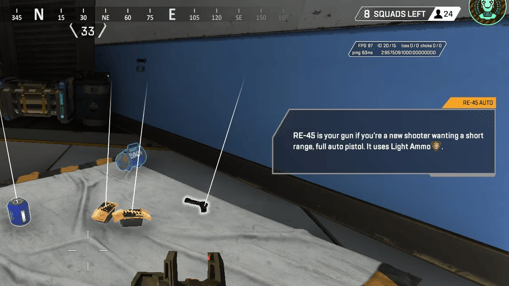

NOTAS DEL PARCHE
ACTUALIZACIONES DE EQUILIBRIO
Pack de supervivencia
- El R-99 vuelve al botín de suelo (más información sobre el equilibrio a continuación).
- La Peacekeeper llega al pack de supervivencia (más información sobre el equilibrio a continuación).
Rotación de armas de oro
- Alternator, R-99, Wingman, rifle de repetición 30-30, ametralladora ligera Rampage
EVO
- El nivel máximo que se puede conseguir al obtener EVO ahora es el nivel 3 (armadura morada).
- La armadura roja ya no puede conseguirse mediante la subida de nivel.
- La cantidad de EVO necesaria para alcanzar el nivel 3 ha aumentado de 1350 a 1700.
Nota de los desarrolladores: la armadura roja permitía una disparidad de salud mucho más amplia a mitad y final de la partida, lo que reforzaba actitudes como olvidarse del equipo en los alrededores y evitar encuentros para recoger recursos. Al reducir el total de armaduras disponibles y los niveles necesarios para obtenerlas, ahora puedes prepararte más fácilmente para el final de la partida y centrarte en lo que importa: la batalla.
Armas aceleradas
Las asistencias con un arma acelerada equipada ya no conceden el 30 % de carga definitiva adicional en modos de Variado.
ACTUALIZACIONES DE JUGABILIDAD
NUEVOS arsenales
- Estas estaciones proporcionan un acceso sencillo y determinista a las armas y a la munición que se elija.
- Hay estaciones en todos los puntos de interés de todos los mapas con ubicaciones fijas.
- El tipo de munición proporcionada es aleatorio en cada partida.
- Incluyen una terminal de mejora para el arma que coincida con el tipo de munición por arsenal.
- La mejora proporciona un accesorio mejorado y una mira si al arma le falta una.
Sistema
- NUEVO Tutorial de Bot Royale

- Aparecen notas que ayudan con las leyendas, las armas, el botín y las situaciones de juego.
- Los objetos de salud o munición baja también reciben avisos para marcar los objetos de botín deseados cercanos.
- Se activa de forma predeterminada en las cuentas por debajo del nivel 20 y se desactiva cuando se alcance ese umbral.
- Se puede activar/desactivar manualmente mediante el menú del sistema en los sistemas de tutoriales.
Maestría de armas
- Las pruebas se han simplificado.
- El diseño de las pruebas es completamente nuevo.
- Se ha eliminado la restricción de nivel de las armas para las pruebas.
Nota de los desarrolladores: el sistema de maestría de armas ha sido rediseñado para eliminar la aleatoriedad innecesaria y centrarse en la esencia del uso de las armas: infligir daños y eliminar al rival. Los progresos y recompensas previos no se verán afectados, y cualquier progreso parcial se convertirá automáticamente.
Curación
- Las pilas ahora tardan 2,5 s en completarse (en lugar de 3 s).
- Las jeringas ahora tardan 4 s (en lugar de 5 s).
- Ahora las jeringas y las pilas acumulan hasta 6.
- Ahora empiezas con 4 pilas y 4 jeringas (antes tenías 2).
- Se ha aumentado ligeramente la velocidad de aparición de baterías y botiquines.
Nota de los desarrolladores: seguirá siendo necesario usar objetos de curación cuando se pueda con una salud máxima inferior, un potenciador de casco de oro universal y un montón de mejoras de arma. Hemos decidido optimizar estas cuestiones para que la curación sea un poco más fácil en general.
Cascos
- Los blancos, azules y morados se han eliminado del grupo de botines.
- Ya no se empieza con un casco blanco.
Nota de los desarrolladores: la búsqueda y uso de cascos siempre ha deslucido un poco la experiencia, en lo que respecta a sentir el impacto de su uso y a que el potencial de daño parezca un poco oscuro. Al eliminar la reducción del daño por disparo en la cabeza del juego, el daño es más uniforme, comprensible y fácil de calcular.
Casco de oro
- Se ha convertido en un casco de mejora de armadura de oro.
- Ofrece un potenciador de curación menor mejorado que duplica el resultado de pilas y jeringas.
- Configura la armadura en 100, independientemente del nivel.
- La subida de nivel sigue siendo necesaria para desbloquear mejoras de leyenda, pero ya no afecta a la armadura equipada.
- No se han reducido los daños por disparos a la cabeza.
- Existe la posibilidad de aparecer en depósitos dorados tras el restablecimiento de depósito.
Nuevo casco de mejora de armadura mítica
- Se ha introducido un nivel rojo.
- Configura la armadura en 125, independientemente del nivel.
- La subida de nivel sigue siendo necesaria para desbloquear mejoras de leyenda, pero ya no afecta a la armadura con este objeto equipado.
- Los cascos rojos no ofrecen una reducción del daño por disparo en la cabeza.
- Aparece en el depósito mítico y los packs de supervivencia de finales de la partida.
Nota de los desarrolladores: los nuevos cascos rojos y de oro se han diseñado para retirar parte del poder pasivo de las leyendas y ponerlo en el grupo de botines. Así se crearán nuevos objetos para que los busques y luches por ellos. También ofrecerán opciones dinámicas de juego para diseñar una estrategia y decidir qué leyendas aliadas llevarán estos potentes objetos nuevos.
Estado de derribo
Aumenta significativamente la velocidad al arrastrarse cuando te derriban, con o sin escudo de emergencia elevado.
Nombres de puntos de interés en el despliegue
- Ahora se puede ver el nombre y el nivel de botín de cada PDI que se proyecta sobre el PDI durante el primer despliegue.
- También incluye información del arsenal para ayudar a elegir el lugar del salto.
Munición y accesorios
- Mejoras: las puntas de martillo se han eliminado del grupo de botines.
- Cargadores de oro: el tiempo de recarga con el arma guardada se reduce de 5 a 2 segundos.
- Mira: la mira holográfica 1x se ha eliminado del grupo de botines.
- Duplicador: se ha reducido la cantidad de munición a 1 caja por arma (antes había 2 cajas).
Armas
Rifles de asalto
- Rifle HAVOC [pack de supervivencia]
- Se ha aumentado el daño de 18 a 21.
- Daños por disparos a la cabeza: 27
- Se ha aumentado el daño de disparo con rayo de 53 a 70.
- Daño por disparo a la cabeza con rayo: 105
- Hemlok
- Se ha aumentado el daño de 19 a 20.
- Daños por disparos a la cabeza: 26
- Némesis
- Se ha aumentado el daño a 17 (antes era de 16).
- Daños por disparos a la cabeza: 22
- Carabina R-301
- Se ha aumentado el daño de 13 a 14.
- Daños por disparos a la cabeza: 18
- VK-47 Flatline
- Se ha aumentado el daño de 18 a 19.
- Daños por disparos a la cabeza: 25
Pistolas
- P2020:
- Se ha aumentado el daño de 21 a 24.
- Daños por disparos a la cabeza: 30.
- RE-45 automática:
- Se ha aumentado el daño de 13 a 14.
- Daños por disparos a la cabeza: 18.
- Wingman:
- Se ha aumentado el daño de 45 a 48.
- Daños por disparos a la cabeza: 72.
- Se ha reducido el tamaño del cargador básico de 6 a 5.
- Con cargador añadido: blanco (6), azul (7), morado/oro (8).
Subfusiles
- Alternator:
- Se ha aumentado el daño de 16 a 18.
- Daños por disparos a la cabeza: 22.
- C.A.R.:
- Se ha aumentado el daño de 13 a 14.
- Daños por disparos a la cabeza: 17.
- Se ha añadido un accesorio de cañón de mira láser.
- Subfusil Prowler:
- Se ha aumentado el daño a 16 (antes era de 15).
- Daños por disparos a la cabeza: 19.
- Subfusil R-99 [botín de suelo]:
- Se ha reducido el daño de 14 a 13.
- Daños por disparos a la cabeza: 16.
- Ya no tiene caída de daños.
- La velocidad de desplazamiento lateral al apuntar con la mira se ha normalizado respecto a otros subfusiles.
- Ya no elimina la penalización de movimiento cuando se equipa.
- Se ha aumentado el retroceso.
- Subfusil Volt:
- Se ha aumentado el daño a 16 (antes era de 15).
- Daños por disparos a la cabeza: 19.
Escopetas
- EVA-8 automática:
- Se ha aumentado el daño por perdigón de 7 a 8.
- Ya no inflige más daños por disparos a la cabeza.
- Mastiff:
- Se ha aumentado el daño por perdigón de 14 a 16.
- Ya no inflige más daños por disparos a la cabeza.
- Mozambique:
- Se ha aumentado el daño por perdigón de 15 a 16.
- Daño por disparo a la cabeza: 60 (todos los perdigones).
- Peacekeeper [pack de supervivencia]:
- Se ha aumentado el daño por perdigón de 9 a 12.
- Daño por disparo a la cabeza: 135 (todos los perdigones).
- Se ha aumentado significativamente la velocidad del estrangulador.
- El patrón de estallido completamente estrangulado está más ajustado.
- Los perdigones infligen un 50 % de daño de perforación tras el primer impacto enemigo.
Nota de los desarrolladores: las escopetas reciben un aumento del daño básico, pero pierden su capacidad de infligir mayor daño por disparo a la cabeza. Este cambio crea un entorno de daños más comprensible y anima a tirar tantos perdigones como sea posible.